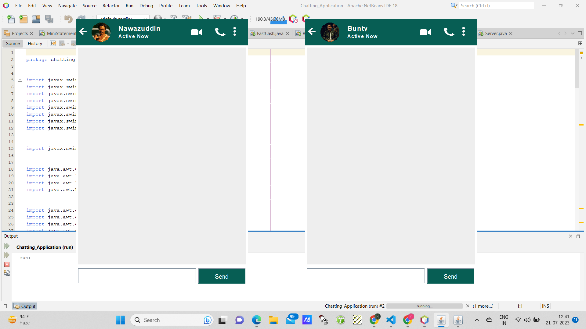
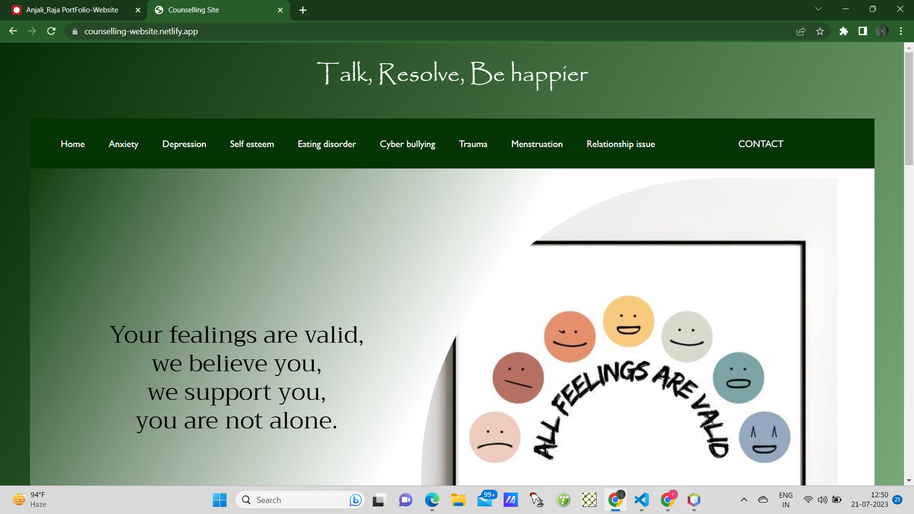

Projects
Automated Teller Machine(ATM).
Technologies used: Java ,Java Swing, Java AWT ,MySQL.
1. Built an Automated Teller Machine (ATM) system that allows user to
create bank account , Withdraw cash , Deposit cash , FastCash , miniStatement , Pin change etc.
2. The application employs Java Swing and Java AWT to create an intuitive and visually appealing GUI.
3. The application integrates with a MySQL Database to store and retrieve account and transaction data securely.
2. The application employs Java Swing and Java AWT to create an intuitive and visually appealing GUI.
3. The application integrates with a MySQL Database to store and retrieve account and transaction data securely.

Chatting Application
Technologies: Java ,Java Swing, Java AWT ,Socket Programming.
1. Developed a fully functional websocket-based chatting application using java , java Swing , java
AWT.
2. Java swing and java AWT libraries are leveraged to create an intuitive and visually appealing Graphical user interface.
3. Application utilizes Socket programming to establish and manage communication channels between the client and server.
2. Java swing and java AWT libraries are leveraged to create an intuitive and visually appealing Graphical user interface.
3. Application utilizes Socket programming to establish and manage communication channels between the client and server.

Counselling Website
Technologies: HTML, CSS ,Javascript.
The aim of this project is to help the people who are suffering from
Depression ,Self esteem ,Trauma ,Menstruation ,Eating Disorder ,etc.
When stress occurs in life, people often elect to speak to a counsellor to given them direction , support and guidance.
So here, i will be doing a meaningfull work and given the real tools , to help real people in real world.
When stress occurs in life, people often elect to speak to a counsellor to given them direction , support and guidance.
So here, i will be doing a meaningfull work and given the real tools , to help real people in real world.
